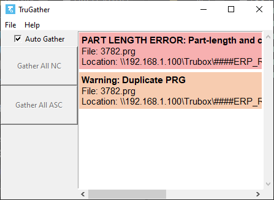
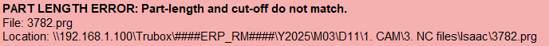
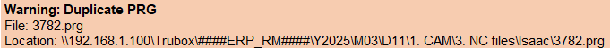

TruGather Help
The Controls

- Auto-Gather
- - When enabled, the program will continuously check the NC folder for valid PRG files to be gathered.
- Gather ALL NC
- - When pressed, the program will look through the NC folder once and gather all valid PRG files.
- Gather ALL ASC
- - When pressed, the program will only gather valid ASC files.
- - When gathering it will create a new ASC folder, the folder will have the date and the amount of files contained within the folder.
- - ASC folder format: month.day_ASC_(no. of files)
How the System Works
The progam first scans all folders within the NC folder for new NC files that are not within the program's database. If it finds a new file, the file will be checked for errors, and whether it is a duplicate or not. If the file has no errors and isn't a duplicate, it is then added to the database and copied to the ALL folder.
If a file is edited and reuploaded, it will be checked again for errors. If the program finds errors in the updated file and it is already gathered, it will remove the corresponding file from the NC folder. If the file is updated again without errors, it will copy the file to the ALL folder again.
If a file is deleted, the corresponding file in the ALL folder will also be deleted. If the deleted file had any duplicates, the program will choose the first duplicate without errors to replace it. If there is no duplicate without errors, it will choose the first one it finds.
The Error Panel
The program continuously scans every file in the NC folder for errors. When the program encounters an error, it is displayed on the error panel.

Each message includes the file name, the location of the file, and what is wrong with the file. Right clicking an error will give you the option to open the location of the file.
Errors

An error is shown if the file being checked contains a major issue that prevents it from being gathered. Below is an explanation of each error type.
- Missing Subprogram Error
- - Shown if the file is missing the $0, $1, or $2 operation.
- Invalid Name Error
- - Shown if the file does not meet proper naming conventions.
- - File Name Format: ####.prg, # is a digit from 0-9.
- Part Length Error
- - If the part-length and the cut-off differ by 0.015 mm or more.
- Missing UG Values Error
- - If the case is special and does not contain UG values.
- Internal Name Error
- - If the ID in the file name and the ID in the first line of the PRG file do not match.
- Invalid Operation Count Error
- - If an operation does not meet the required count.
- Out of Order Error
- - If an operation is not in the correct order. All tools must have the correct count before this error can be shown.
Warnings

A warning is shown if the file being checked contains a minor issue, but will still be gathered. Currently only one warning type exists.
- Duplicate PRG Warning
- - If there are duplicates of the same PRG file in multiple locations, this warning will be shown.
- - When encountering duplicate files, the program will ony gather the first file it finds with that name, subsequent files with the same name will not be gathered.